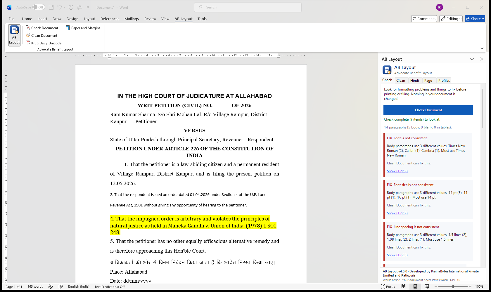
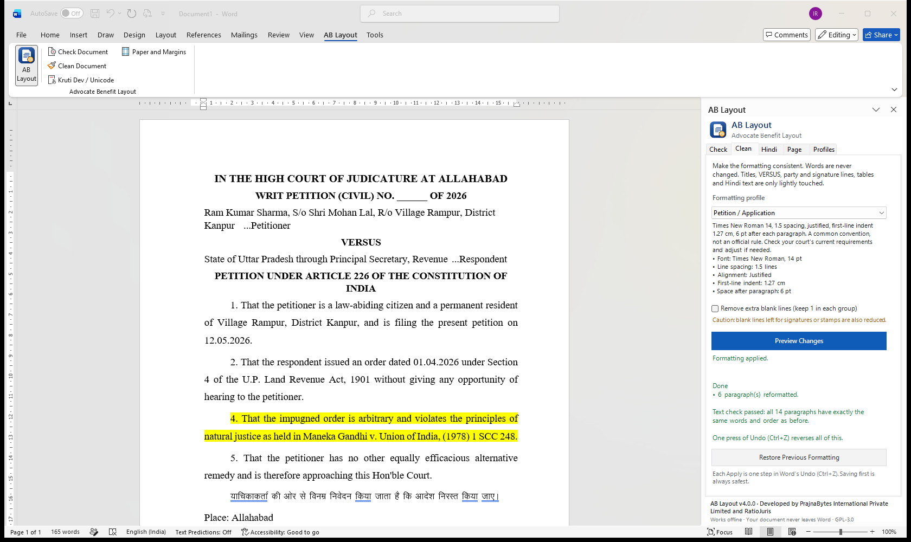
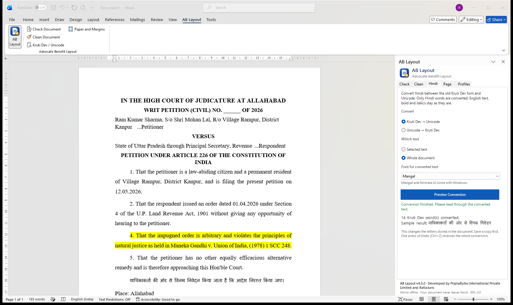
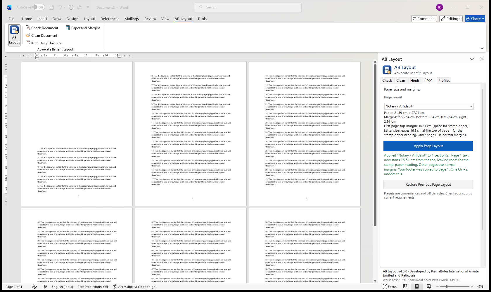

Check Document
Finds mixed fonts and spacing, gaps in paragraph numbers, ____ and XXX blanks, highlights, comments, tracked changes and the wrong paper size — and jumps to each one.
AB Layout checks your petition, affidavit or written submission, makes the formatting consistent, and confirms afterwards that every word is exactly as you wrote it.
Built for documents assembled from old petitions, typist drafts and PDF extracts — the way legal documents are really made.
Finds mixed fonts and spacing, gaps in paragraph numbers, ____ and XXX blanks, highlights, comments, tracked changes and the wrong paper size — and jumps to each one.
One click, after a preview. Body paragraphs become consistent; cause title, VERSUS, party and signature lines, tables and quotations keep their layout.
Converts Hindi word by word inside Word. English, numbers, bold and italics stay exactly as they are.
After applying, AB Layout reads the document again and confirms every paragraph has the same words in the same order. Changed your mind? Restore.
A4, legal-size and stamp-paper affidavit presets, each with its source. Presets are conveniences — always check your court's current rules.
Create your own profiles, keep them on your computer, and share them with the chamber by copy and paste.
Taken inside Microsoft Word with a sample petition (fictitious names).




AB Layout understands the parts of a legal document and only formats what should be formatted.
Type or paste below. This is the same converter that runs inside the add-in — in Word it also keeps bold, italics and English words untouched.
Kruti Dev text appears as English letters unless the Kruti Dev font is installed on your computer. Converted locally; nothing is sent anywhere.
Open the AB Layout tab in Word and the panel appears beside your document.
See every inconsistency and filing slip-up, and jump to each one.
"Make Consistent" keeps your own style — or pick Supreme Court A4, double-spaced 14 pt, Petition, Affidavit…
See exactly what will change and what will be kept, before anything happens.
Formatting is applied and the text is checked word for word. Save — or Restore.
The Windows version works fully offline in Word 2013 and later. The web version runs in Word for the web and on Mac.
| Feature | Windows version | Web version (desktop) | Word for the web |
|---|---|---|---|
| Check Document | Yes | Yes | Yes |
| Clean Document & Restore | Yes | Yes | Yes |
| Kruti Dev ↔ Unicode | Yes | Yes | Yes |
| Paper size & margins | Yes | Recent Microsoft 365 | Use Word's Layout menu |
| One-step Undo | Yes | — | — |
| Works offline | Yes | — | — |
Loaded from the same file the add-in uses. Conveniences, not legal requirements — verify with your court.
ABLayout-Setup.exe — no administrator password needed.Remove it any time from Settings → Apps → Installed apps. Can't run .exe files? Use the ZIP version (extract, then double-click install.cmd).
manifest.xml.Engineering that serves the profession: practical, affordable tools that respect the integrity of legal documents and the confidentiality of clients.
No. It uses fixed, predictable formatting rules. Formatting never changes your words, names, dates, citations or prayers, and the text is checked after every run. Only the Hindi converter changes characters — and only when you ask it to, after a preview.
No. Everything happens inside Word on your computer or in your Word for the web session. AB Layout has no server, no account and no analytics.
No. Profiles and page presets are conveniences, with sources cited where they follow an official circular. Always check the current requirements of your court and registry.
Yes. Use Restore Previous Formatting in the panel, Word's Undo (Ctrl+Z), or close without saving. Saving a copy before you start is always the safest option.
Nothing. AB Layout is free and open-source software under the GNU GPL v3 or later.
The Windows version runs in Word 2013, 2016, 2019, 2021, 2024 and Microsoft 365 on Windows, without internet. The web version runs in Word for the web, on Mac and in Microsoft 365. Word 2007 and 2010 cannot run add-ins.
Install AB Layout free and check your current draft in seconds.
Install the add-in